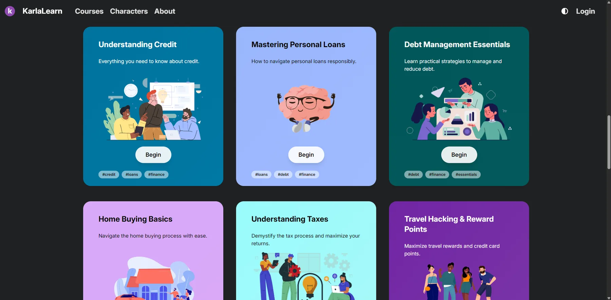
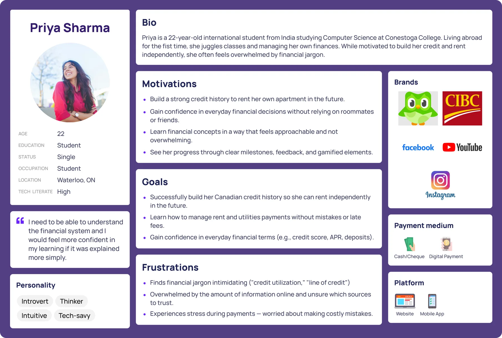
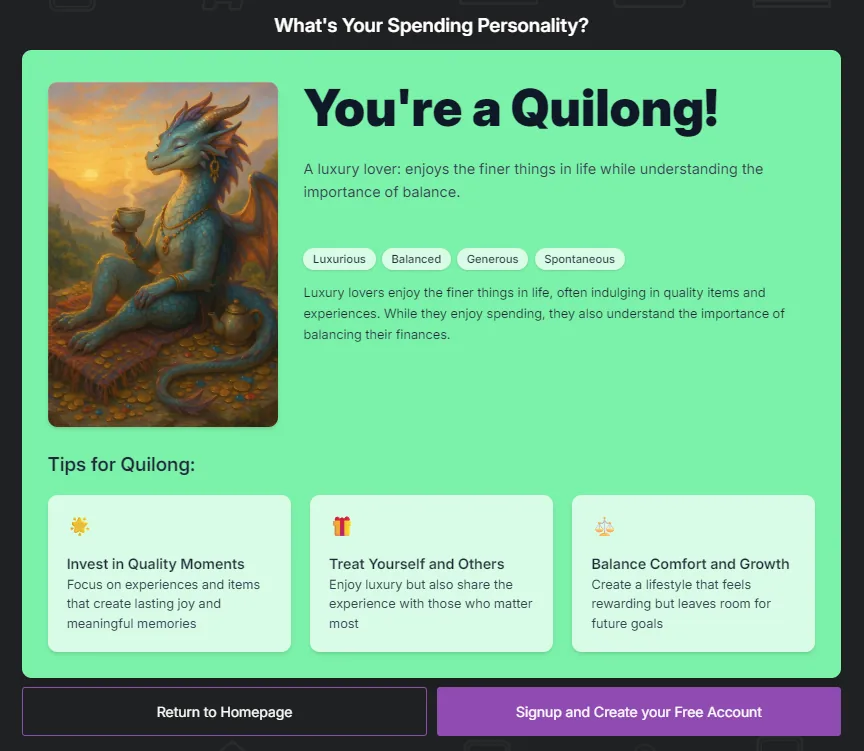
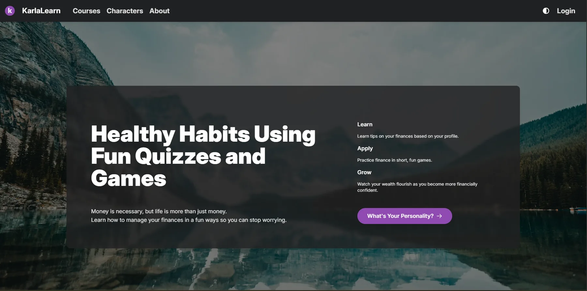
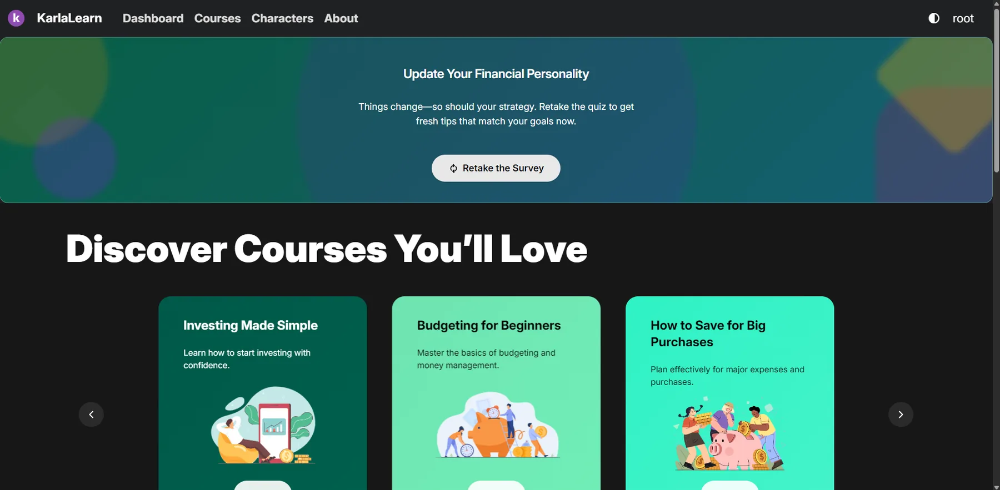
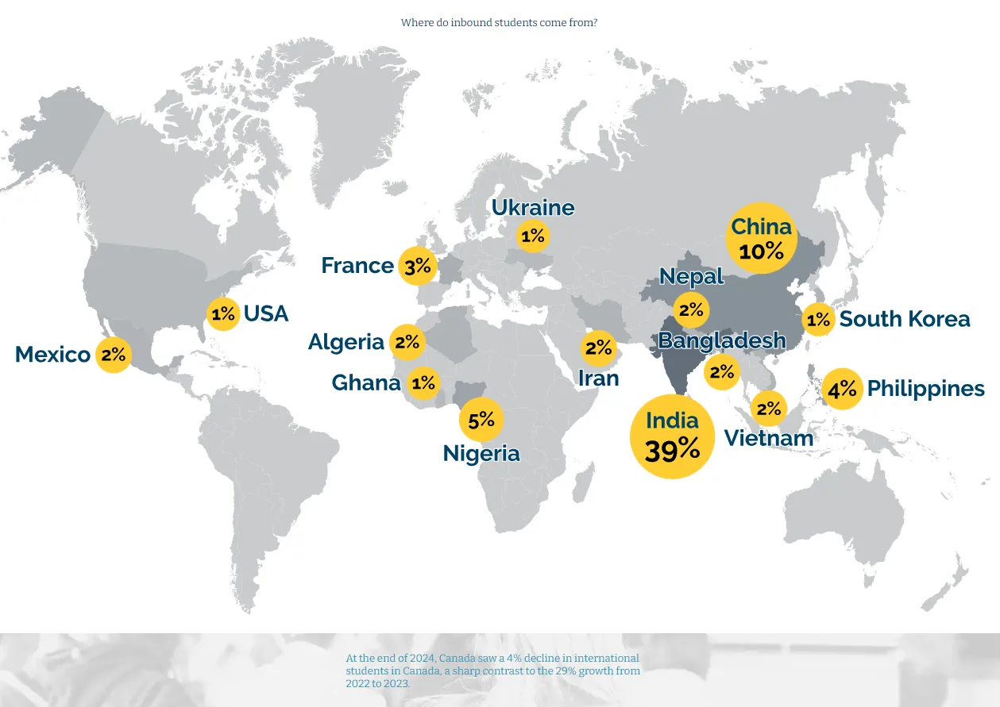
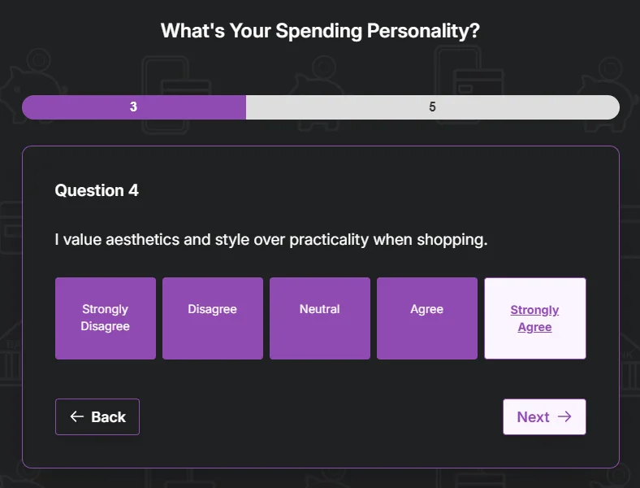
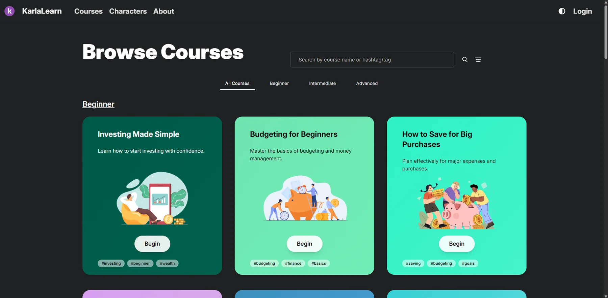
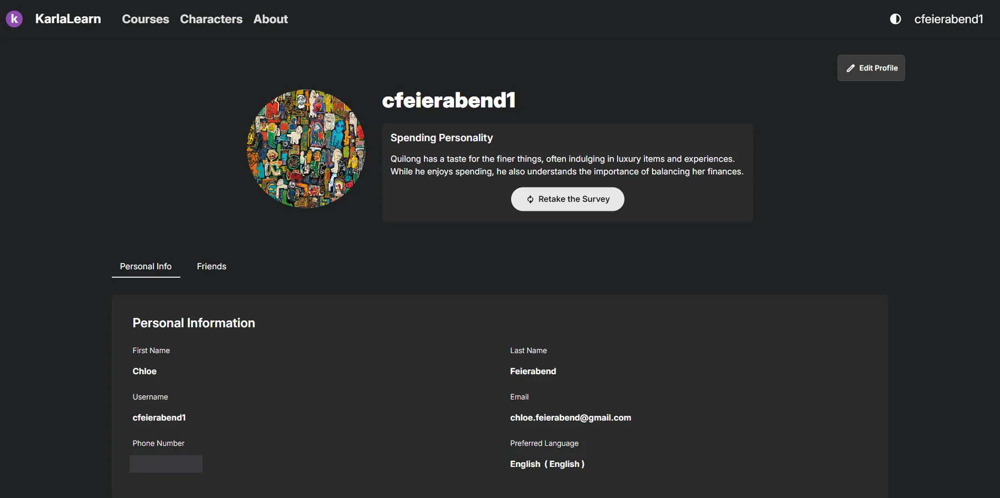

[case study 02]
Karla Learn
A financial literacy web app for international students and newcomers, made with a credit union.
- role
- Lead UX/UI designer and front-end developer
- team
- 4 people: the team lead, dev-ops, a developer and me
- timeline
- May – Aug 2025, co-op with a credit union
- result
- Shipped MVP in 3 months · tested with international students

01 · problem + constraints
What if financial literacy was actually fun?
International students and newcomers often have a hard time figuring out how money works in Canada, from credit scores to budgeting to renting. The information that exists is scattered and full of jargon, and most of it isn't written for people who are new to the country.
The goal was to build a tool that makes Canadian finance easier to understand, and even a little fun, for people dealing with money here for the first time. The whole app is built around Learn, Apply, Grow: learn a money topic, practise it in short quizzes and games, and grow with a progress bar that shows how far you've come.
Sources: 997K+ from IRCC (opens in a new tab) (June 2025), as of December 31, 2024. 38% from a TD survey (opens in a new tab) reported July 2025 (compared to 25% of the general population).
Research
I started by building the persona below from the research that had already been done. From there, I looked at competitors like Duolingo to see what keeps people coming back to learn, and compared how money works in the countries most international students come from. Later in the project, we tested the app with international students.

02 · key decisions
Three choices that shaped it
-
Animals, not labels
- options
- Spending-type labels, like most money quizzes, or something friendlier.
- we chose
- An animal for each personality, from the four countries most international students come from: a tiger for India, a dragon for China, an eagle for Nigeria, and an ox for the Philippines, after the carabao water buffalo.
- why
- Labels for spending types can be full of jargon, and some of them make a result sound like the wrong one to get. "You're a Quilong" is easier to say than a financial label, and it makes money feel friendlier. Every result feels familiar, and nobody feels judged by their result.

-
The quiz is optional
- options
- Make everyone take the quiz first, or let them skip straight to courses.
- we chose
- An optional quiz, with every course open to browse.
- why
- Making someone finish a quiz before they see anything is an easy way to lose them, so we left that choice up to them.

-
Courses picked for you
- options
- The same course list for everyone, or courses matched to each spending personality.
- we chose
- Recommendations based on the quiz result, with harder levels that unlock as you go.
- why
- Looking at apps like Duolingo showed how much a clear next step and a small reward for finishing can keep people learning.
We designed this, but it wasn't built before I left in August.

03 · where people come from
Designing for where people come from
Most international students in Canada come from India, China, Nigeria, and the Philippines, so I looked at how people handle money in each. I found that having a credit card isn't necessarily the norm in those countries. In Canada, your credit history affects things like renting an apartment, so that gap matters.

- IndiaMost everyday payments happen on a phone, straight from a bank account.
- ChinaPeople pay for almost everything through apps like Alipay and WeChat Pay.
- PhilippinesPhone wallets like GCash and Maya are a common way to pay and send money.
- NigeriaCash is still used for a lot of everyday buying, though paying by phone and bank transfer is growing fast.
This research shaped the Understanding Credit course and helped us decide which other courses newcomers would need most.
I compared banking systems, banking culture, financial education, and digital banking in each country.
04 · design system
My first design system
I built my first design system on my own in Figma, with the core components and their interaction states, like the selected answers in the personality quiz. It wasn't fully developed, and that made the late mobile work much harder.
- Front-end development. Turned my Figma designs into working pages and components in SvelteKit.
- Accessibility. Checked colour contrast against AODA, added alt text and ARIA labels, and tested across Chrome, Edge, Firefox, and Brave.
- layout
- Clear card-based modules.
- typography
- A large, readable sans-serif that feels friendly but still professional.
- colour
- Purple, green, and teal to feel trustworthy and playful.

05 · what testing showed
Usability testing
We tested with international students, including a core group of 5. They completed a personality quiz, checked their learning progress, and read module content.
- The progress bar and quiz feedback kept people motivated.
- People liked the plain language and visual icons.
"I wish I had had a tool like this when I first moved here. Finding out information was difficult and this makes it more fun."
06 · results + next
What happened, and what I'd do next
We shipped an MVP in 3 months and tested it with international students.
-
Plan for mobile from the start
Starting mobile late, without a full design system behind it, made it harder than it needed to be. Now I design for small screens and build out the system early, so the rest of the product has something solid to stand on.
-
Look at where people are coming from
Learning that credit cards aren't the norm in students' home countries changed which courses we built. I wouldn't have found that by only looking at how money works in Canada.
-
Test sooner
We only tested late in the project. Next time I'd test rough versions earlier, so we can catch problems sooner.
07 · final designs
The finished screens


Sources
Students and newcomers
- Canadian Bureau for International Education. (2025, March 21). International students in Canada infographic (opens in a new tab). CBIE.
- Canadian Immigrant. (2025, July 23). Financial stress is the top challenge for newcomers in Canada: report (opens in a new tab).
- Immigration, Refugees and Citizenship Canada. (2025, June 9). International students: Committee of the Whole briefing (opens in a new tab). Government of Canada.
- Randall, S. (2025, July 28). Newcomers to Canada face financial knowledge gap, TD survey finds (opens in a new tab). Wealth Professional.
- Stacey, V. (2022, January 28). Canada: survey points to psychological, academic and financial stress (opens in a new tab). The PIE News.
- Taylor, S. (2024, March 15). Financial stress taking a toll on international students, advocates say (opens in a new tab). Global News.
- Varughese, A., & Schwartz, S. (2022, April). The pandemic exposed the vulnerability of international students in Canada (opens in a new tab). University Affairs.
Banking in India, China, Nigeria, and the Philippines
- Bangko Sentral ng Pilipinas. (2022). National strategy for financial inclusion 2022–2028 (opens in a new tab).
- Central Bank of Nigeria. National financial inclusion strategy (revised) (opens in a new tab).
- CGAP. (2020, December). China: A digital payments revolution (opens in a new tab).
- Reserve Bank of India. (2020). National strategy for financial inclusion 2019–2024 (opens in a new tab).